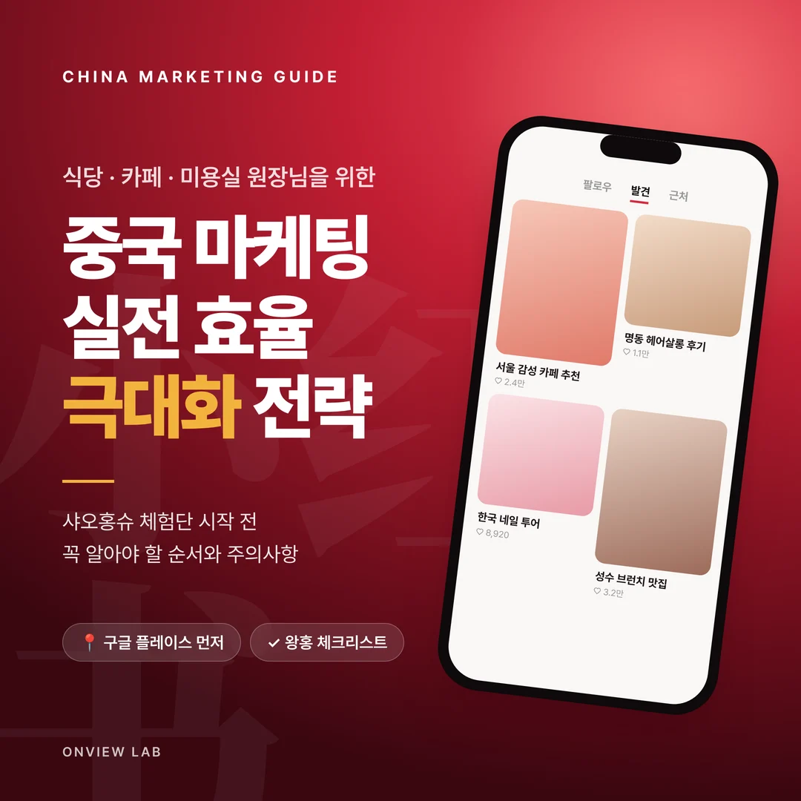
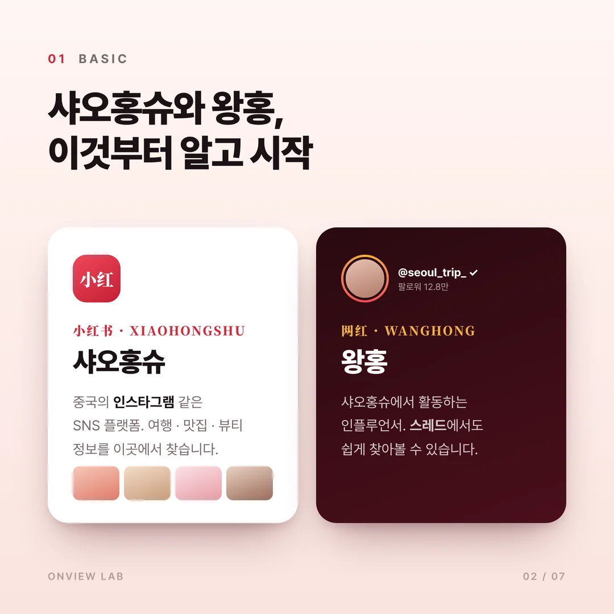
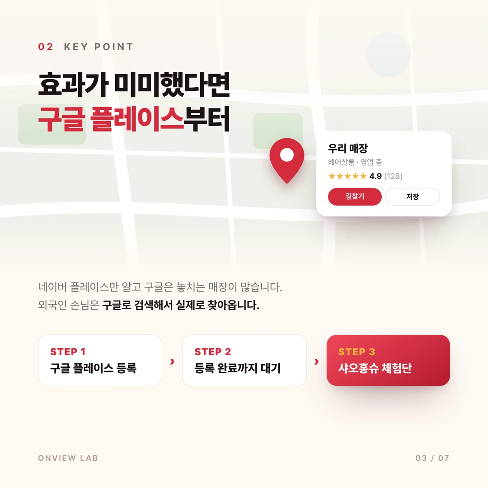
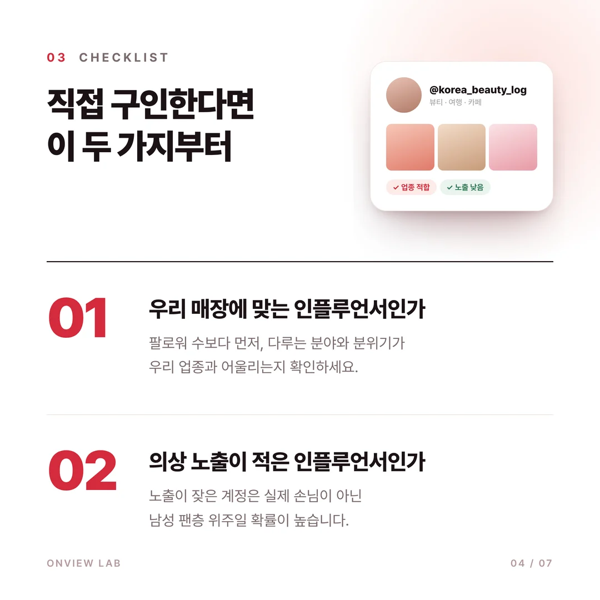
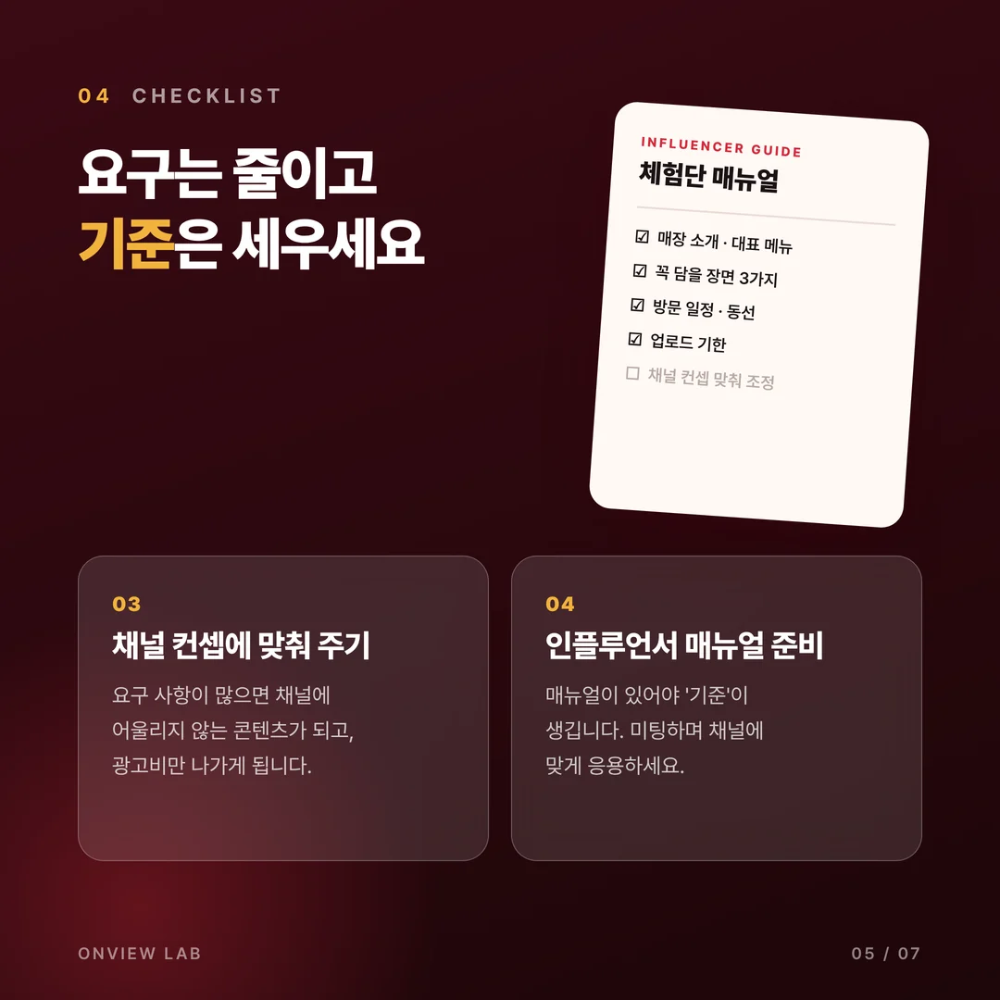
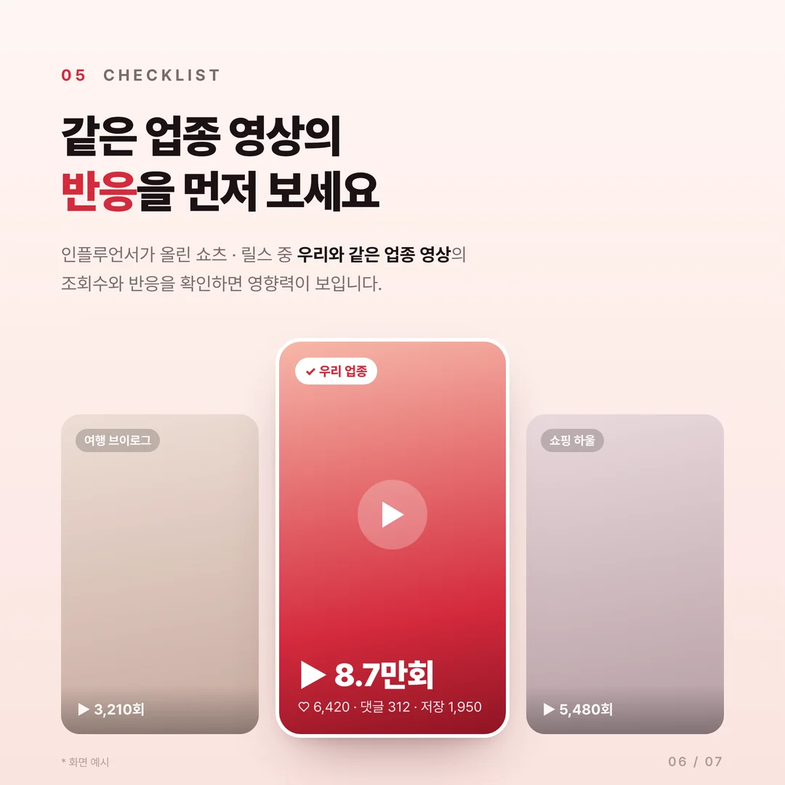
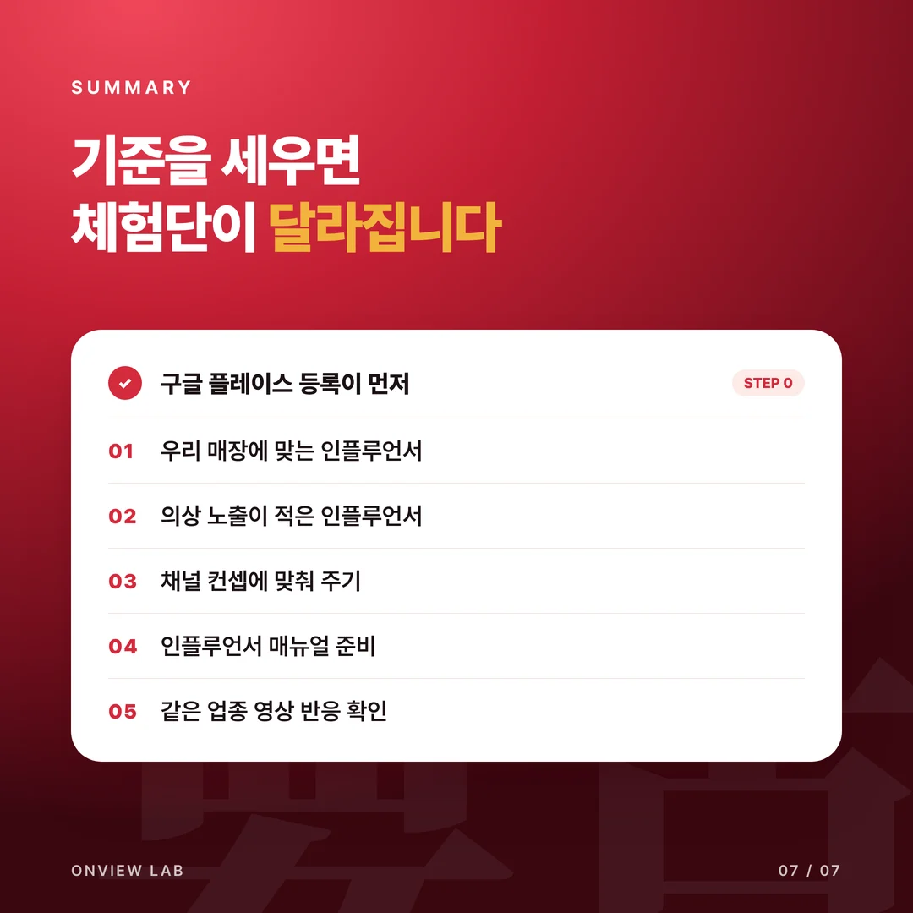

중국마케팅, 샤오홍슈 체험단 효율을 높이는 방법과 주의사항

안녕하세요. 온뷰랩 마케팅입니다.
오늘은 중국마케팅을 실전에서 사용하실 때
효율을 극대화하는 방법과 주의사항을 안내드리려고 합니다.
최근 한국에 거주하시는 중국인분들도 많아지고,
여행을 오셔서 체험단과 관광을 즐기시는 분들도 많아지셨는데요.
이런 흐름 덕분에 중국마케팅이 점점 인기를 끌고 있습니다.
저희 쪽에도 식당, 카페, 미용실 대표님들께서 중국마케팅을 많이 여쭤봐 주십니다.
샤오홍슈와 왕홍

중국마케팅의 핵심은 샤오홍슈를 활용하실 줄 아는 것입니다.
샤오홍슈는 중국의 인스타그램 같은 SNS 플랫폼이라고 보시면 됩니다.
처음 들어보시는 분들도 계실 거고,
'지금 하고 있는데도 매출이 크게 늘지 않는 것 같다'고 생각하시는 분들도 많으실 겁니다.
샤오홍슈의 인플루언서는 '왕홍'이라고 부릅니다.
왕홍은 스레드에서도 쉽게 찾아보실 수 있습니다.
체험단 효과가 미미했던 이유

왕홍이나 체험단을 구인했는데 효과가 미미했다면 왜 그럴까요?
이유는 다양하지만 공통적인 문제점이 있었습니다.
많은 대표님들께서 네이버 플레이스는 알고 계시는데,
구글에도 플레이스가 있다는 걸 모르시는 분들이 있으시더라구요.
네이버처럼 구글도 검색 기반이고, 구글 사용자도 정말 많습니다.
워드프레스, 티스토리 블로거들만 쓰는 게 아니라
실제로 구글로 검색해서 매장을 찾아가시는 분들도 계십니다.
구글 플레이스 등록 → 등록 완료까지 대기 → 샤오홍슈 체험단 구인 또는 대행
그래서 구글에 플레이스를 먼저 등록하시고,
등록이 완료된 뒤에 샤오홍슈 체험단을 구인하시거나 대행을 맡기시는 것을 추천드립니다.
직접 구인하실 때 확인할 5가지

첫 번째, 우리 매장에 적합한 인플루언서인지 확인하세요.
팔로워 수보다 먼저, 다루는 분야와 분위기가 우리 업종과 맞는지 봐야 합니다.
두 번째, 의상 노출이 적은 인플루언서를 구인하세요.
특히 여성 인플루언서의 노출 빈도가 높다면 남성 팬이 많은 계정일 확률이 있습니다.
실제 손님으로 이어지려면 노출도가 낮은 인플루언서가 좋습니다.

세 번째, 인플루언서의 채널 컨셉에 맞춰 주세요.
원하시는 사항이 너무 많아 채널에 어울리지 않는 콘텐츠가 되면
광고비만 나가는 상황이 됩니다. 컨셉에 최대한 맞춰 주시는 것이 좋습니다.
네 번째, 인플루언서 매뉴얼을 준비해 두세요.
매뉴얼이 있어야 '기준'이라는 것이 생깁니다.
미팅이나 상담을 하면서 인플루언서도 기준에 맞춰 주고,
대표님들께서도 해당 채널 컨셉에 맞게 기준을 응용하시는 것을 권장드립니다.

다섯 번째, 같은 업종 영상의 반응을 확인하세요.
인플루언서가 올린 쇼츠, 릴스 중 우리 매장과 같은 업종 영상을 찾아보세요.
어떤 영상에서 조회수와 반응이 더 좋은지 보면 그 인플루언서의 영향력을 알 수 있습니다.
정리

오늘은 이렇게 5가지를 정리해 보았는데요.
이렇게 기준을 세우시면 앞으로 사업 유지와 확장에 조금이라도 도움이 되실 겁니다.
중국마케팅이나 구글 플레이스 등록이 궁금하시면 편하게 상담 남겨 주세요.